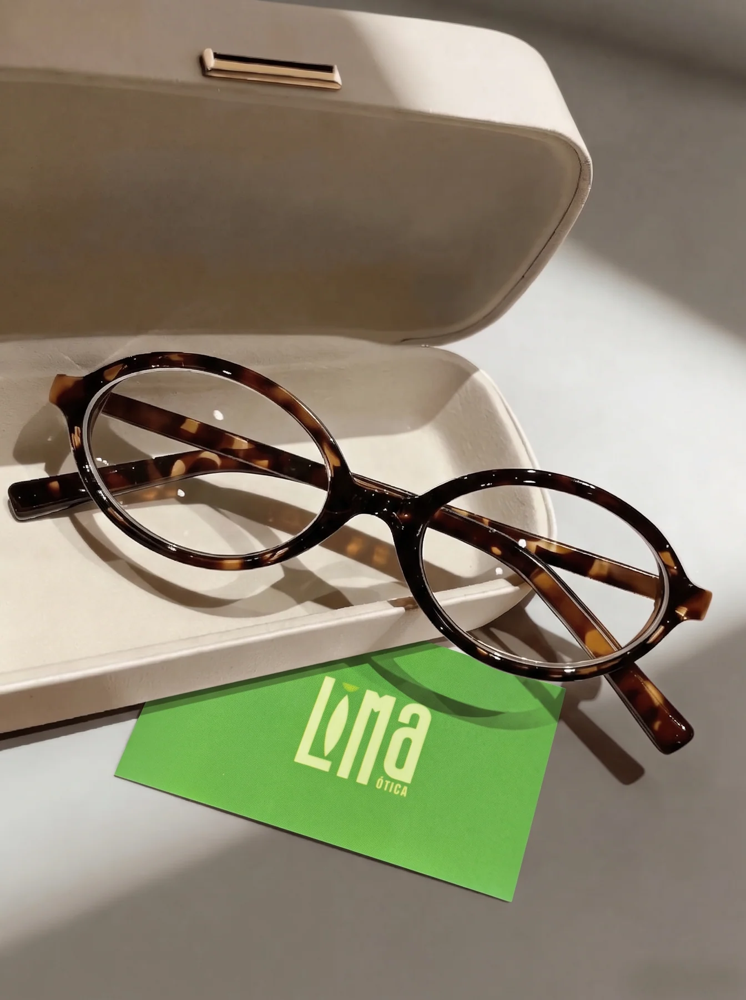
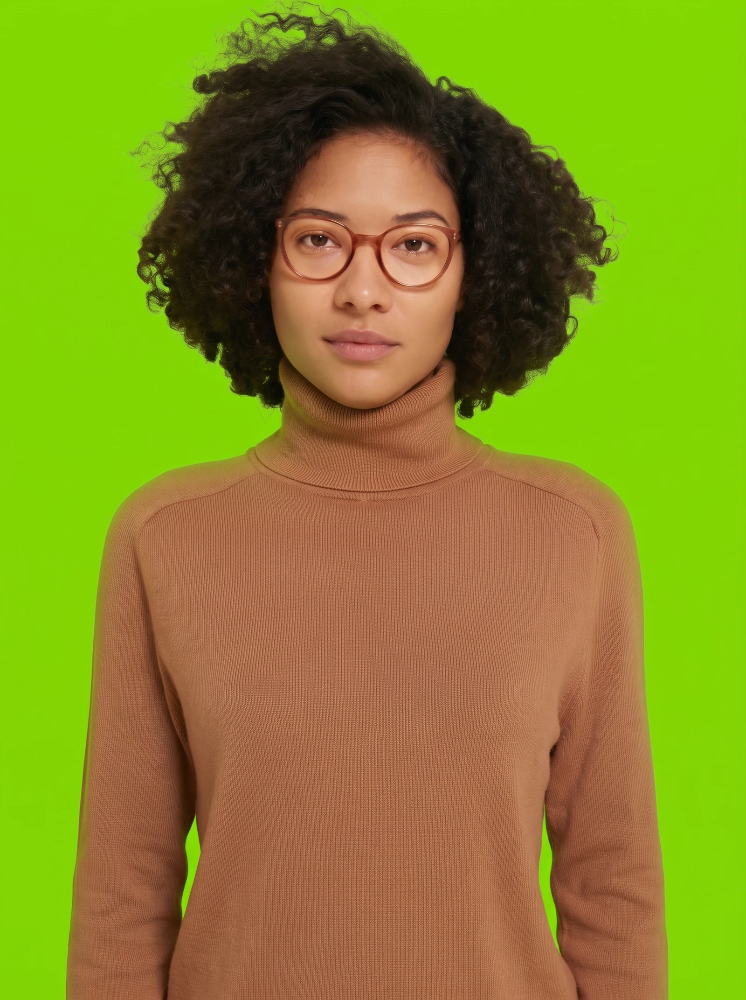
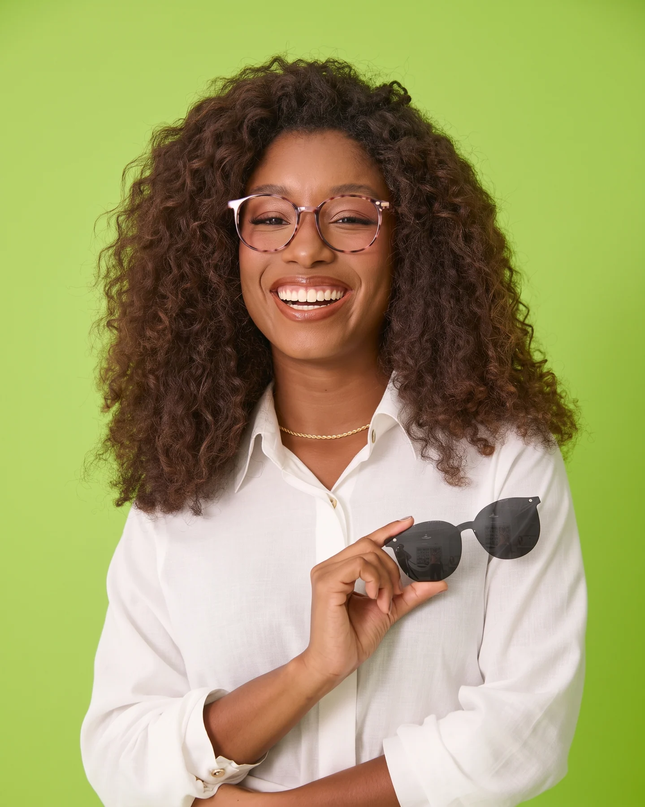
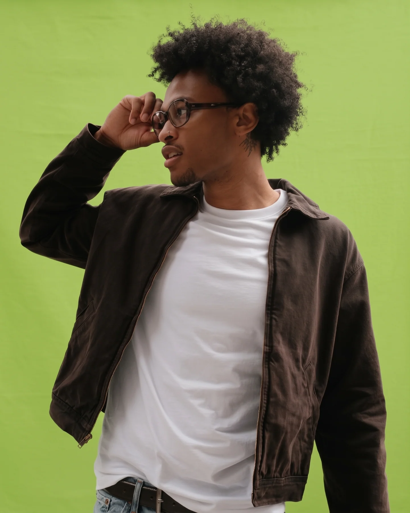

FOTO 01Estilo tartaruga
Referência de estilo · consulte modelos semelhantes
Ótica Lima / Campo Grande, MS
Na Ótica Lima, ajudamos você a encontrar armações que combinam com seu gosto, sua rotina e seu jeito de ver o mundo.

O que você procura?
Óculos de grau e armações para diferentes estilos. Fale com a gente para consultar os modelos disponíveis.
Modelos para conhecer
Estas imagens ilustram estilos de armação. Chame a gente para conhecer os modelos disponíveis.

FOTO 01Referência de estilo · consulte modelos semelhantes
Referência de estilo · consulte modelos semelhantes

FOTO 03Referência de estilo · consulte modelos semelhantes
As imagens são ilustrativas e não confirmam disponibilidade em estoque. Fale com a gente para consultar os modelos atuais.

Um jeito mais próximo de escolher
Na Ótica Lima, a gente ajuda você a encontrar armações que combinam com o seu gosto e as suas necessidades. Conte pra gente o que procura e vamos conversar.
Conte pra gente o que você procura pelo WhatsApp ou direct. Vamos sugerir armações para você conhecer.
Além da entrega em Campo Grande, vamos até sua casa para apresentar as armações e ajudar você a escolher. Consulte pelo WhatsApp os modelos disponíveis.
Depois da escolha, encaminhamos o pedido ao laboratório e entregamos o óculos pronto no seu endereço. O prazo depende da lente escolhida.
Uma nova perspectiva
Conheça referências de armações e estilos. Consulte a disponibilidade dos modelos pelo WhatsApp.
Fale com a Ótica Lima
Fazemos entregas em Campo Grande e também levamos armações até sua casa para você conhecer os modelos. Fale com a gente para consultar valores e disponibilidade.
Fale pelo WhatsAppCampo Grande, MS
Fazemos entrega e também vamos até sua casa para apresentar as armações. Consulte pelo WhatsApp as opções disponíveis.
Segunda a sexta · 8h às 18h
Sábado · 8h às 13h
Consulte os horários atuais para pedidos pelo WhatsApp.